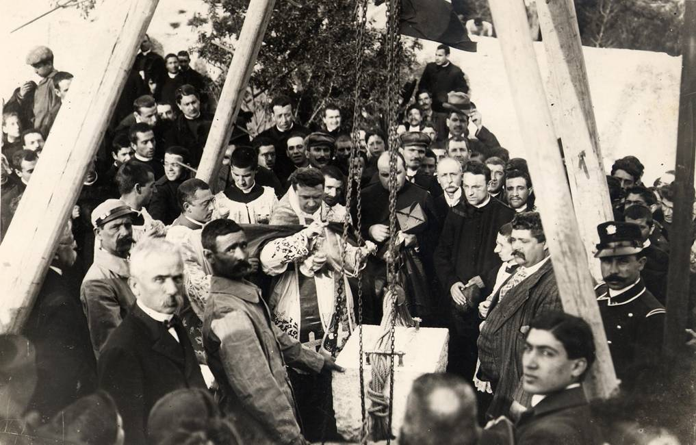

1908 - 29 aprile - 2008
100 anni dalla Posa della Prima Pietra
dell’Opera Salesiana di Viale fra Ignazio

Dopo l’invio da Torino del progetto di massima del futuro Oratorio, preparato da don Luigi Rocca, si incominciarono presto i lavori di scavo e la posa della prima pietra avvenne nel corso dei festeggiamenti in onore della Vergine di Bonaria, che il 13 settembre 1907, con decreto della Sacra Congregazione dei Riti, era stata dichiarata da Pio X Patrona della Sardegna.
Festa dolcissima e commovente fu quella che si svolse il 29 aprile 1908 con tutta solennità in Viale degli Ospizi, ove per le offerte dei buoni e mercé lo zelo fervoroso e la provvida ed efficace azione del teologo Mario Piu, sorgerà il tanto atteso Oratorio.
Festa dolcissima e commovente fu quella che si svolse il 29 aprile 1908 con tutta solennità in Viale degli Ospizi, ove per le offerte dei buoni e mercé lo zelo fervoroso e la provvida ed efficace azione del teologo Mario Piu, sorgerà il tanto atteso Oratorio.
Il vasto locale presentava un colpo d’occhio ammirabile. Numerose aste sostenevano le bandiere multicolori che agitate dal vento portavano una nota gaia e festosa. Su di un bellissimo palco erano disposti i seggi per l’Eminentissimo Card. Arcivescovo di Pisa e gli altri cospicui personaggi che avrebbero presenziato alla cerimonia, e a destra sorgeva un elegante altarino ove in un panneggiamento rosso campeggiava l’immagine di Maria Ausiliatrice attorniata da una ghirlanda di rose; ai lati stavano i ritratti di Pio X e del Ven. Don Bosco.
Alle 16,30 giunse Sua Eminenza il Card. Maffi accolto da caldi applausi, accompagnato dalle loro Eccellenze Rev.me Mons. Pietro Balestra arcivescovo di Cagliari, Mons. Ingheo, arcivescovo titolare di Anazarba, Mons. Tolu arcivescovo di Oristano, Mons. Canepa vescovo di Galtellì-Nuoro, Mons. Piovella vescovo di Alghero e Mons. Vinati vescovo di Bosa.

Sua Eminenza, insieme coi prelati, sale sul palco, dopo aver stentato alquanto a scinder la folla che gli si assiepava intorno per baciargli l’anello e riceverne la benedizione. È impossibile enumerare tutte le illustri e benemerite persone convenute alla cerimonia. Accanto a Sua Eminenza e le loro eccellenze prendono posto i rev.mi Mons. del Duomo, i membri del Comitato per le feste di Bonaria e i vessilli del Circolo San Saturnino, dell’Operaia Cattolica, della Sant’Ambrogio, della San Giovanni, dei Luigini e dei Figli di Maria.
Come l’E.mo ebbe apposta la firma alla pergamena ed ebbero pur firmato gli Arcivescovi e i Vescovi presenti unitamente al Decano della Metropolitana Mons. Serra, al Vicario Generale Mons. Miglior e al Dott. Mario Piu, il prof. Congiu Lostia disse, applauditissimo, il discorso di circostanza.
Sua Eminenza indossò quindi gli abiti pontificali e procedette alla benedizione della prima pietra.

Il masso discese lentamente fra gli applausi scroscianti, mentre il Cardinale ne seguiva con lo sguardo la discesa verso lo spianato e tracciava con la destra un segno di croce.
La pergamena, che fu racchiusa nel masso con una medaglia in argento raffigurante il Sommo Pontefice, una medaglia con la effigie della Vergine di Bonaria e di Sant’Efisio, una medaglia di Maria Ausiliatrice, una moneta da due lire dell’ultimo conio e qualche altra medaglia, era disegno del bravo giovane Carlo Pintor e recava queste parole dettate da Mons. Serra:
In nomine Domini. Amen. L’anno del Signore 1908 al 29 aprile regnando nella cattedra di San Pietro Pio Papa X; essendo arcivescovo di questa città Fr. Pietro Balestra dei M.C. di San Francesco; Superiore dei Salesiani D. Michele Rua; Sua Em. Rev.ma Pietro Maffi Cardinale di Santa Romana Chiesa, Arcivescovo di Pisa, Primate di Corsica e Sardegna, inviato da S.S. Pio X per prender parte alle solennissime feste in onore della Vergine Incoronata di Bonaria, proclamata Patrona Massima della Sardegna dal Romano Pontefice con decreto della Sacra Congregazione dei Riti del 13 settembre 1907, solennemente benedì e pose la prima pietra del qui erigendo Oratorio Salesiano
Compiuta la cerimonia, un giovanetto dell’Oratorio umiliò all’E.mo Arcivescovo di Pisa un ricchissimo mazzo di fiori pronunziando alcune gentili parole. Parlò quindi lo zelantissimo teol. D. Mario Piu, che sciolse un inno di caldo entusiasmo al Ven. Fondatore degli Oratori; e a lui tenne dietro il Sig. Conte Sanjust, interrotto e salutato da applausi. In ultimo si avanza sul limitare del palco il Card. Pietro Maffi e la sua parola buona scende dolcemente nei cuori.
In una sintesi mirabile, scrive l’ottimo “Corriere dell’Isola” del 30 aprile 1908, Sua Eminenza abbraccia tutte le istituzioni salesiane e dice della loro bontà, della loro opera rinnovatrice e santa, istituzioni fondate dal Venerabile D. Giovanni Bosco “orfanorum pater”. Con un’imponente ovazione all’Em.mo Porporato ebbe termine la solenne cerimonia.
Dopo la posa della prima pietra, i lavori proseguirono alacremente sotto la direzione gratuita degli ingegneri D. Francesco Floris Thorel, Riccardo Simonetti, Onnis e Mura. In una relazione del «Bollettino Salesiano» si legge infatti: «chiunque passi per la via degli Ospizi può constatare con quale alacrità si compiano i lavori dell’erigendo Oratorio Salesiano e come il fabbricato sia già a buona altezza».
Si sperava infatti di concludere entro il mese di novembre la prima parte della costruzione (cioè quattro piani per una lunghezza di 21 metri, una larghezza di 15,50 metri e un’altezza di oltre 18 metri) e, come continuava il «Bollettino Salesiano», «ciò sarà possibile ove non manchi il concorso dei capitali necessari».
Il «Corriere dell’Isola» aprì quindi una sottoscrizione e nel solo primo elenco figuravano 2.000 lire.
Intanto don Piu continuava a raccogliere soldi tramite conferenze, accademie, concerti, lotterie e feste varie, e, d’accordo con i superiori salesiani di Torino e di Roma, con prudenza e insieme con coraggio e intraprendenza seguì i lavori di costruzione «…tra le ansie e le speranze, tra le gioie e le disillusioni a seconda dell’affluenza delle offerte o della assoluta mancanza delle elemosine».
Anche le autorità cittadine si interessarono presso don Piu della casa che si voleva affidare ai Salesiani: il regio subeconomo della città, in particolare, gli chiese delle informazioni a cui don Piu rispose: «… il movente che fece nascere in molti questo desiderio (dei salesiani a Cagliari) è lo stato di deplorevole abbandono nel quale si trova un gran numero di figli del popolo, i quali, coltivati a tempo e ben educati, potrebbero crescere onesti e utili alla società, anziché andare a popolare le carceri.
Lo scopo principale, in una parola, è il bene della gioventù, ma specialmente dei poveri. A loro vantaggio si apriranno scuole gratuite e un ricreatorio». Gli comunicò poi che la cittadinanza aveva prestato «il suo appoggio materiale e morale» e che vi erano state numerose «...insistenze e premure da parte di molti padri di famiglia, impiegati e professori, ma specialmente di tante povere madri».
Nel settembre 1910 don Piu aveva già speso per il terreno e per una parte del fabbricato 35.000 lire ed al giugno 1911 60.000 lire, raggranellate con piccole offerte.